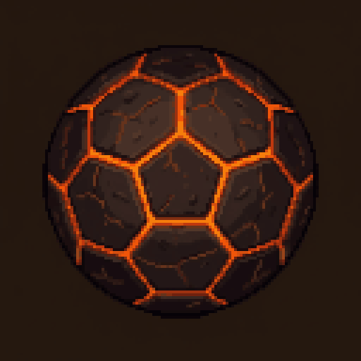
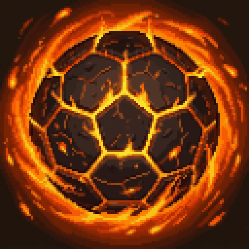
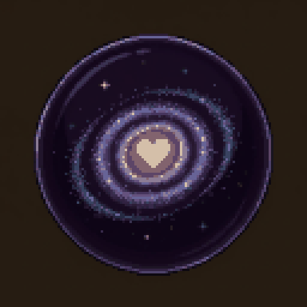
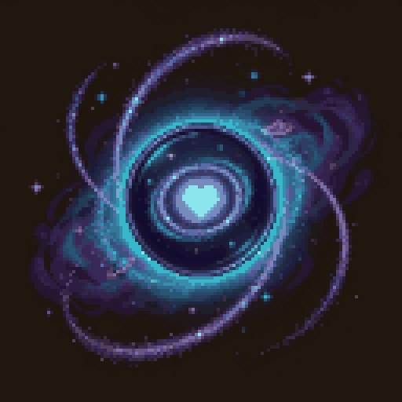
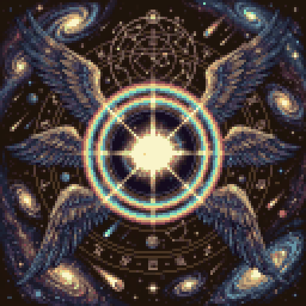

이름과 이미지 모두 가칭입니다. 도트 128×128, 64색, 배경은 확인용 단색입니다. 스타일 보드로
| +0 | +10 | +30 | |
|---|---|---|---|
| 일반 동네 축구공 |
바람 빠진 동네 축구공+0 | 전설의 골목대장 공+10 | 무한우주를 골로 끝내는 종언의 대축구공+30 |
| 영웅 용암공 |
 식어 버린 화산석 공+0 |
 끓어오르는 용암의 심장 공+10 |
태양을 삼키고 분화하는 종언의 용암공+30 |
| 신화 은하 심장 공 |
 빛을 잃은 유리구슬 공+0 |
 은하가 숨 쉬는 심장 공+10 |
 창세의 은하 심장: 무한우주의 첫 박동+30 |